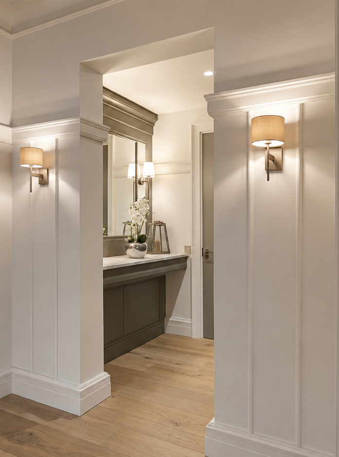

Wspieram proces wykonawstwa mebli i stolarki poprzez projektowanie, rozwój detali oraz przygotowanie dokumentacji technicznej dla produkcji.
Moje doświadczenie warsztatowe pozwala mi dobrze rozumieć konstrukcję, kolejność pracy, materiały, montaż oraz problemy, które mogą pojawić się podczas wykonywania mebli.
Pomagam tworzyć rozwiązania dopracowane technicznie, szczególnie w przypadku mebli wykonywanych metodami tradycyjnymi lub łączącymi różne technologie produkcji.
← Powrót do strony głównej